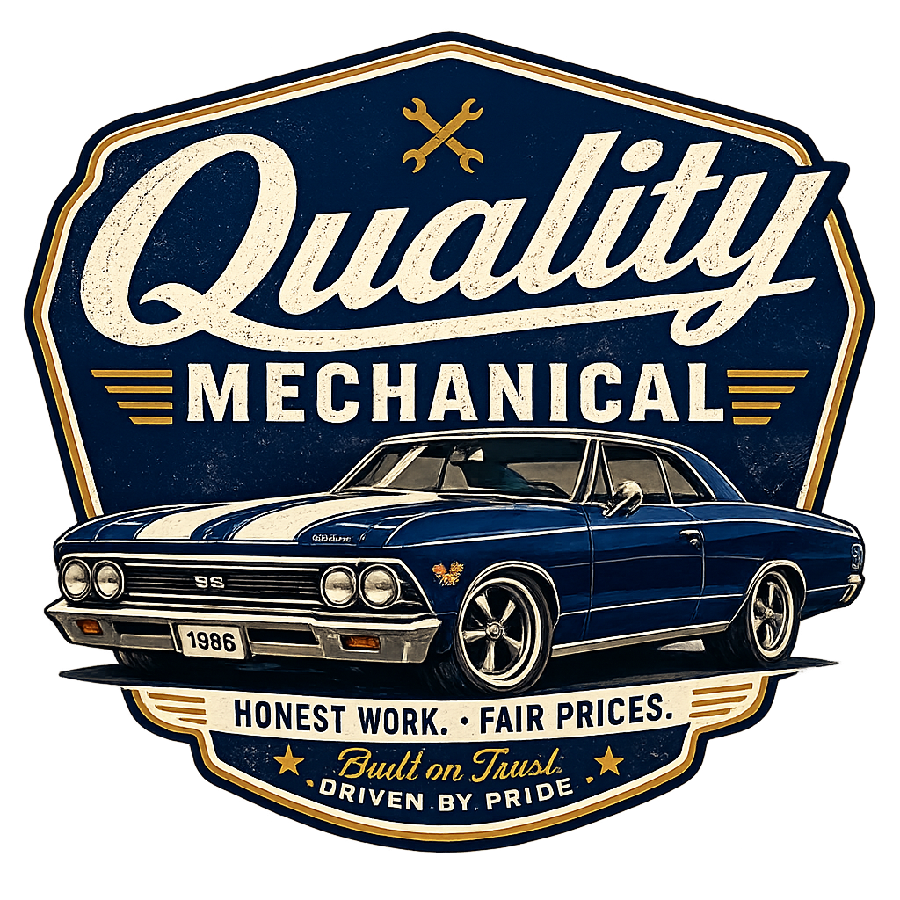
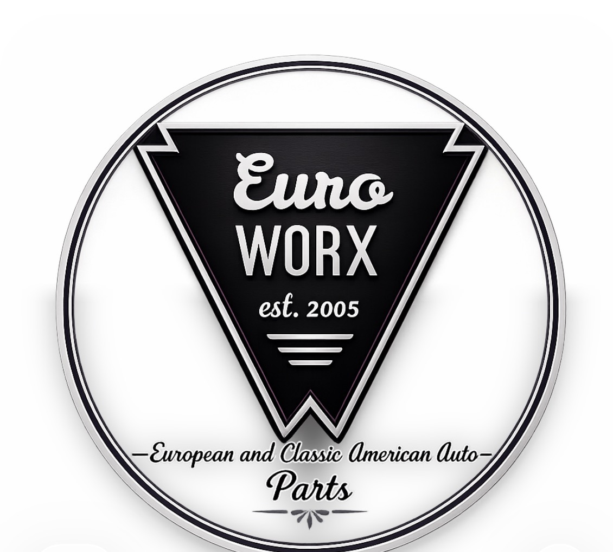

Before we build a website, we make sure the brand behind it is worth showing. Here's a sample of logos and marks we've designed — each one built for a specific client, industry, and purpose.


Need a logo? Whether you're starting from scratch or need a refresh, we design custom marks built for your business — not pulled from a template library. Every logo we make is yours to own completely.